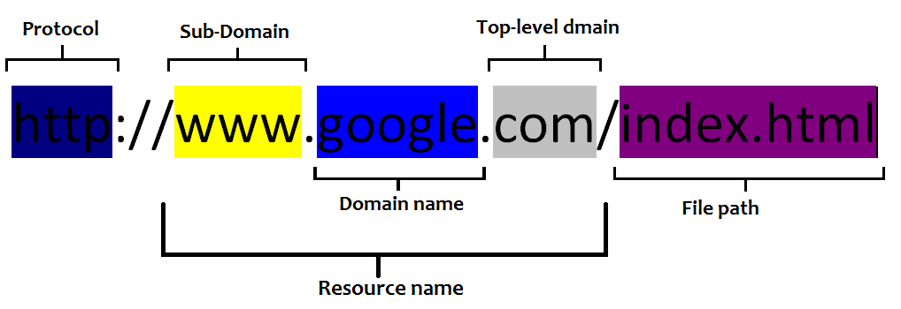
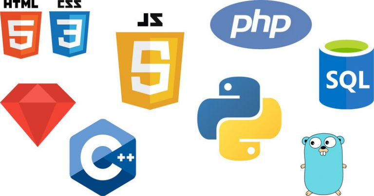
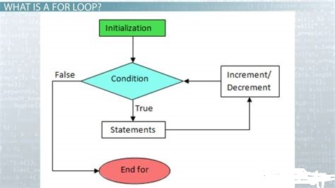
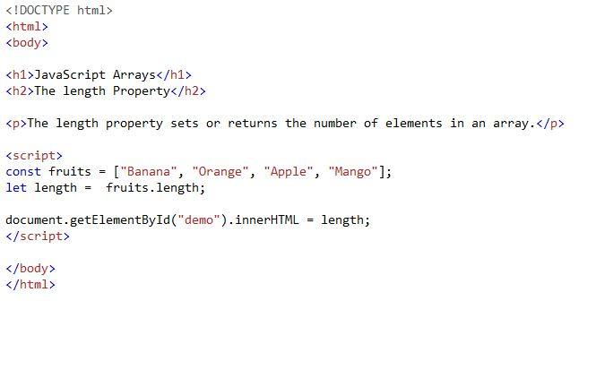
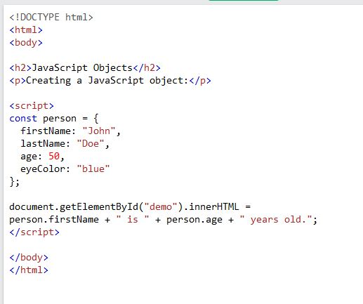

JavaScript - JS is an object-orientated programming language, primarly used to add functionality to webpages.

A blog is a kind of website, a personal viewpoint, commentary, regularly updated. The term 'blog' is the short for 'logging the web'. This blog is about my programming studies. It is my personal journal or log. Now let's explore what are a website and a webpage.
A webpage is a document that we usually view in an internet browser. It provides us with information and entertainment. It may include text, pictures, images, sounds, videos and links to other webpages. A website is a group of several webpages linked together.

Websites are written in several programming languages. The most important one is HTML.
Other important ones are CSS and JS. Other languages commonly used are Java, Phyton, PHP, SQL, .NET, etc.
Let's focus on HTML, CSS and JS. An analogy for them could be a house or an appartment.
HTML is like a frame, a structure that holds everything together. It lays out what is where on a page.
CSS is like the interior design. Each room in a house could have its unique colours, size, elements(furniture). CSS provides background colours, font styles and size, etc., making the webpage attracive and easy to use.
JS could be compared to the appliances in the house. Each room/webpage has its own functionality. Appliances are interactive, for example we use an oven and stove to cook food. We could use a heater to warm a room. Similarly JS allows users to interact with a page, to fill forms, to validate input.
Control flow is the order in which the instructions in a program are executed. Normally in JS, code is executed line by line, top to bottom, in a linear fashion. There are three types of a flow:
1) Sequential - the one just described above, the default flow.
2) Branching /Conditional flow -when code does different actions based on different conditions.
3) Repetitive flow -loops are examples for this, 'for loop' executes until a condition is true. Other loops run until they run out of a condition to loop over.
Control flow could be compared to a meal preparation. Let's say we are baking a cake. Firstly we need to have all the necessary ingredients like sugar, flour, eggs, chocolate, nuts, etc. Secondly, we need to do things in sequential order, like mix sugar and eggs, add flour, add chocolate , and bake.
Deviating from this would be disastrous, resulting in wasted ingredients and time. Like mixing sugar and chocolate, baking it in an oven, then adding flour. Total disaster.
JS loops could be also compared to cooking. Let's say we are making pancakes. We made the bater, now it's time to fry pancakes. So we repeatedly (loop) fry, one pancake, after another, until we run out of the batter. Then we could do another loop, like spreading a jam on pancakes until we run out of either.

The DOM - Document Objects Model connects/allows all parts of a webpage to work together.
According to mozilla.org : "The Document Object Model (DOM) is a programming interface for web documents. It represents the page so that programs can change the document structure, style, and content." from Introduction to the DOM .
It is a way how a browser internally represents a webpage, it provides how JS interacts with objects(content) within a website. DOM is a tandard set by by the World Wide Web Consortium DOM specifies how browser interprets HTML documents. HTML document consist of elements (headers, paragraphs,lists, etc.)
Elements are interpreted as objects and are called 'nodes'. Similarly we could describe the relationship between elements as an upside down 'tree'. We can select and change (with JS) any element according to its place within this 'tree'. Using a browser's DevTools, and going to 'Console' we can access and manipulate elements by executing JS code.

An array is used to store multiple elements in a single variable. It is often used when we want to store a list of elements and access them by a single variable.
We can access data values from an array by calling data access position(number) in the array.
Objects are the most important data type in JS. They are quite different from the primitive data types (Number, String, etc). Objects are used to store different types of key collections and complex entities. An object is a collection of key-value pairs.
In order to access data, we need to know its name and call it in our code.

A function is a set of statements that takes inputs, does some specific computation, and produces output. It is a set of statements that does some tasks or some computation and then returns the result to the user.
Why are functions helpful?
They are used when the code needs to be executed multiple times - avoiding repating code. Another advantage is the code change and maintenance - it is easier done at one place , then at multiple places.